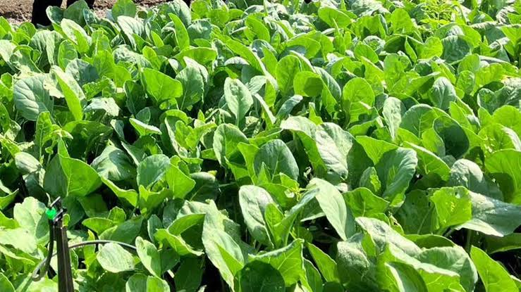
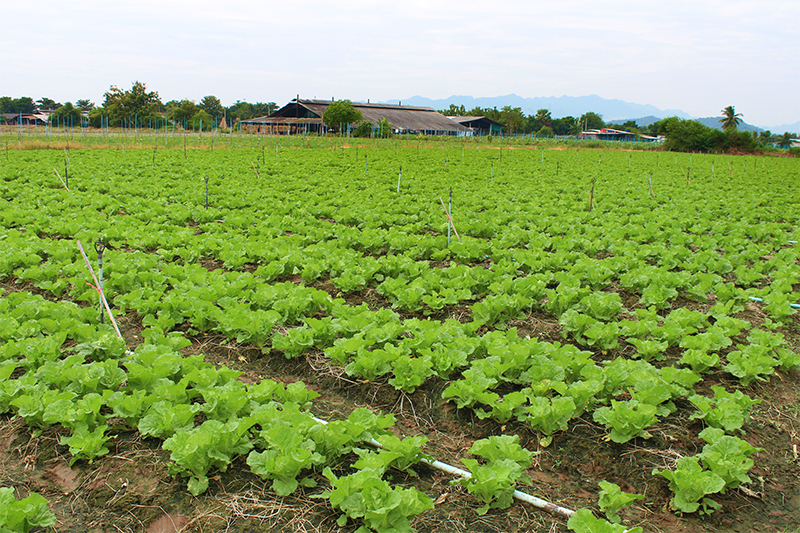
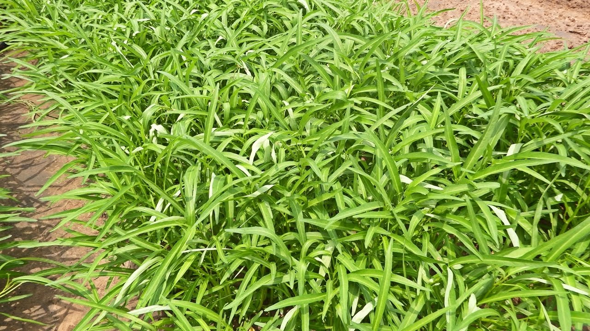
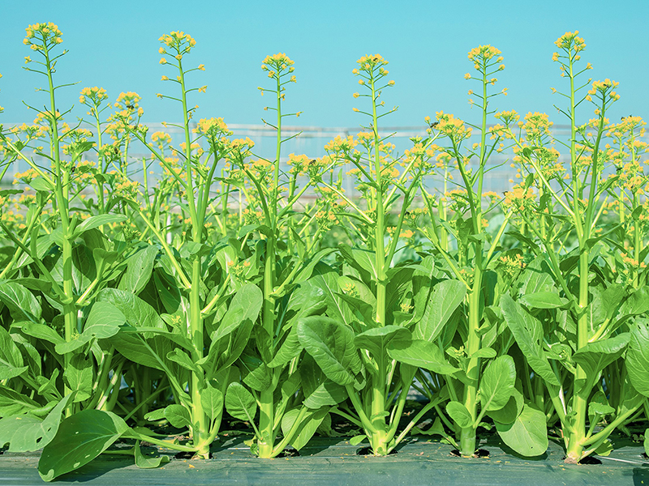

ปลูกผักอย่างไรให้ได้ผลดี
เคล็ดลับการดูแลพืชผักสวนครัวอย่างถูกวิธี เพื่อให้ได้ผักใบเขียวสด ผลผลิตดี และเจริญเติบโตอย่างเหมาะสม

คะน้า – ผักใบเขียวปลูกง่าย
ผักกาด – ผักใบที่เหมาะกับอากาศเย็น
ผักบุ้ง – โตเร็ว เก็บเกี่ยวได้ไว
กวางตุ้ง – ผักใบที่ปลูกได้ง่ายคะน้า
ผักใบเขียวที่ปลูกได้ตลอดปี เจริญเติบโตดีในอากาศไม่ร้อนจัด ควรได้รับแสงแดดและน้ำอย่างสม่ำเสมอ
- อายุเก็บเกี่ยวประมาณ 45–60 วัน
- สภาพแสงแดดเพียงพอ
- ระยะปลูกขึ้นอยู่กับพันธุ์
- การให้น้ำรักษาความชื้นในดิน
ผักกาด
ผักใบที่มีหลายชนิด ควรเลือกพันธุ์ให้เหมาะกับฤดูกาล เตรียมดินให้ร่วนซุยและระบายน้ำได้ดี
- อายุเก็บเกี่ยวประมาณ 40–60 วัน
- สภาพแสงแดดเพียงพอ
- สภาพดินดินร่วน ระบายน้ำดี
- การให้น้ำให้สม่ำเสมอ
ผักบุ้ง
ผักที่เจริญเติบโตเร็ว เหมาะกับการปลูกในดินที่มีความชื้นเพียงพอ ควรดูแลไม่ให้ดินแห้งเกินไป
- อายุเก็บเกี่ยวประมาณ 20–30 วัน
- สภาพแสงแดดเพียงพอ
- สภาพดินดินชุ่มชื้น
- การให้น้ำรักษาความชื้นสม่ำเสมอ
กวางตุ้ง
ผักใบที่ปลูกได้ค่อนข้างง่าย เหมาะกับดินร่วนที่มีธาตุอาหารเพียงพอและมีการระบายน้ำที่ดี
- อายุเก็บเกี่ยวประมาณ 30–45 วัน
- สภาพแสงแดดเพียงพอ
- สภาพดินดินร่วน ระบายน้ำดี
- การให้น้ำให้สม่ำเสมอ